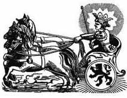
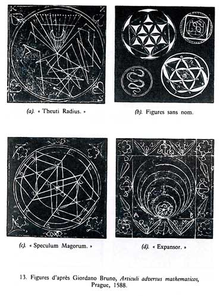
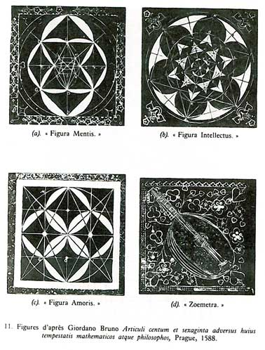
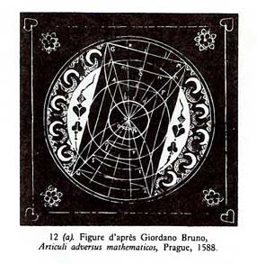

|
|
LA
MAGIE selon GIORDANO BRUNO
L'hermétisme au service de la mnémotechnie
|
"umbra
profunda sumus"
"Nous sommes une ombre profonde" |
|
| |
|
Plus
qu'un philosophe, Giordano Bruno apparaît comme
un Mage lorsqu'il rédige et publie ses ouvrages
traitant de mnémotechnie.
|
| |
|
France
Yates, dont l'objet des recherches vise à recadrer
la philosophie brunienne dans le contexte hermétique
et magique de son époque, a montré que cet art
figuratif peut être assimilé à la magie puisqu'il
permettrait d'obtenir la connaissance universelle.
Devenu une mode dans les milieux intellectuels
de la Renaissance, l'art de la mémoire permet
d'imprimer des images archétypales.
|
|
|
| |
|
|
|
Axés
sur le culte solaire et empreints d'hermétisme, les deux premiers
livres de Bruno concernant la mnémotechnie se révèlent de
véritables guides pour obtenir " tous les pouvoirs de l'âme
". De Umbris Idearum se présente sous la forme d'un dialogue
entre 3 personnages : Hermès, Philothine et Logifer, le premier
connaissant l'art magique des images révélées qu'il va transmettre
à ses deux disciples. La mnémotechnie est apparentée au soleil
et l'ensemble du livre se développe sur thème de magie solaire
instruite par le Trismégiste.
|
| |
|
Suit
alors un catalogue mystique de 150 images sur lesquelles est
fondé le système magique de la mémoire, profondément inspiré
de La philosophie Occulte d'Agrippa. Se succèdent les images
des 36 décans, celles des 7 planètes (au nombre de 7 chacune),
des 28 images des demeures lunaires complémentées par l'image
du Draco Lunae et enfin, les 3x12 images des maisons astrales.
|
| |
|
Par
exemple, on trouvera la première image de Saturne décrite
ainsi : " Un homme avec une tête de cerf, sur un dragon, avec,
dans sa main droite, une chouette qui dévore un serpent ".
|
| |
 |
|
Illustration
de Cantus Circaeus
|
|
|
Le
Cantus Circaeus reste dans cette
lignée et présente Circée, fille du Soleil, comme
un Mage récitant de longues incantations planétaires.
Les
premières pages de l'ouvrage sont un récapitulatif
de tous les noms du Soleil, de ses attributs,
des animaux et plantes qui lui sont associés et
dont les pouvoirs permettent d'attirer sur soi
l'âme solaire. Circée réitère ensuite ses formules
pour chaque puissance planétaire : la Lune, Saturne,
Jupiter, Mars, Vénus et Mercure.
Bruno
apparaît comme un maître dans l'art d'inventer
des systèmes d'images magiques et talismaniques.
Comme l'a montré France Yates, le caractère hermétique
de ses ouvrages est frappant puisque les images
sont intégralement vidées de leur sens chrétien
et en appellent à l'hermétisme égyptien que le
philosophe juge supérieur au christianisme. C'est
pourquoi L'expulsion de la bête triomphante, écrit
deux ans plus tard, sera une véritable apologie
de la religion magique des Égyptiens et
inspiré, selon France Yates, de l'occulte Asclépius.
|
|
|
| |
| |
|
Pour
son dernier ouvrage publié en 1591, Bruno se consacre
une nouvelle fois à la mnémotechnie magique et
astrologique. De la Composition des signes, des
images et des idées se présente sous la forme
d'un catalogue planétaire centré autour du Soleil
et de ses attributs.
Incroyablement
sophistiqué et illustré par les représentations
planétaires classiques, l'ultime traité de Bruno
révèle le découpage scrupuleux de la mémoire.
Son complexe procédé s'articule autour de "12
principes" auxquels se greffent parfois des
principes secondaires et que France Yates a répertoriés
de la manière suivante :
|
|
 |
| Le
Soleil - Illustration de la Composition des signes,
des Images et des Idées - Francfort - 1591 |
|
|
|
|
| |
Principes
Elémentaires |
Principes
Elémentaires |
| 1 |
Jupiter |
Junon |
| 2 |
Saturne |
|
| 3 |
Mars |
|
| 4 |
Mercure |
|
| 5 |
Minerve |
|
| 6 |
Apollon |
|
| 7 |
Esculape |
Circé,
Arion, Orphée |
| 8 |
Sol |
|
| 9 |
Luna |
|
| 10 |
Venus |
|
| 11 |
Cupidon |
|
| 12 |
Tellus |
Océan,
Neptune, Pluton |
|
|
| À
chacun de ses principes correspondent des images
magiques où Bruno multiplie les attributs négatifs
et positifs. À l'instar de De Umbris Idearum,
le soleil apparaît comme un fédérateur et correspond
à la richesse, l'abondance ou encore la fertilité.
Circé tient toujours son rôle de magicienne, puissante
et dont le pouvoir est à double tranchant.
France
Yates explique que la magie brunienne, cachée
derrière son aspect mnémotechnique, permettrait
à l'initié de s'accorder les pouvoirs bénéfiques
de chaque principe afin de devenir le " Mage solaire,
jupitérien ou vénusien ". En d'autres termes,
son art de la mémoire exprime le moyen de s'attirer
l'influence des étoiles, de s'identifier à un
pouvoir et d'avancer vers le divin pour se confondre
avec lui.
|
|
|
| |
| haut
de page |
| |
|
Traité « contre
les mathématiciens »
Au
début de l’année 1588,
Bruno quitta Wittenberg et se rendit à Prague,
où il séjourna environ six mois.
C’était là que résidait,
au milieu de sa cour, l’empereur Rodolphe
II, qui rassemblait sous son aile protectrice
des astrologues et des alchimistes venus de
l’Europe toute entière pour l’aider
dans sa quête mélancolique de
la pierre philosophale. Bruno n’était
pas un hermétiste alchimique pratiquant,
mais il essaya d’attirer l’attention
de l’empereur sur sa « mathésis »,
et lui dédia un livre, publié à Prague,
sous le titre provocateur de Articuli
adversus mathematicos.
Ce traité « contre les mathématiciens » est illustré d’une
curieuse collection de diagrammes reproduits ci-dessous. |
|
|
| |
 |
 |
| |
Ils
ont une apparence vaguement géométrique,
mais avec l’intrusion occasionnelle de quelques
objets intéressants, comme des serpents ou
des luths. L’un, qui porte le titre égyptien
de « Theuti Radius » (fig.
13a) est orné d’un motif comportant
des zig-zags et des points, et ressemble à une
variation sur un thème fondé sur les
caractères des planètes. Un autre,
tout aussi décoratif, est appelé « Theuti
circulus ». Un petit objet curvilinéaire
se trouve dans un autre diagramme (fig. 13b).
On peut voir dans ce « vers » la représentation
des « liens » avec les démons.
Il est probable que Bruno grava lui-même les planches de ces diagrammes,
car ils ressemblent par leur style à ceux du De triplici minimo,
qui furent gravés, à en croire les affirmations de l’imprimeur,
de la main même de Bruno.
|
|

Trois
diagrammes (fig. 11a, b, c) sont
des variations sur le thème de l’intersection
des cercles. Le texte affirme sans ambages que le
premier diagramme représente la mens universelle,
le deuxième, l’intellectus,
et le troisième, la « figure d’amour » qui
harmonise les contraires et unifie la multiplicité dans
l’un. Ces trois figures, dites les plus « fécondes »,
représentent la trinité hermétique
comme elle est définie par Bruno dans les « Trente
Statues ». La troisième, l’amoris
figura (fig. 11c) porte même
les lettres du mot Magic inscrites dans le diagramme.
Notons également que Bruno se servait dans
ce traité de l’étoile pour signifier « amor ».
|
|
|
L’Empereur
donna de l’argent à Bruno pour sa mathésis « contre
les mathématiciens », mais sans lui octroyer
le moindre emploi. Bruno poursuivit son chemin jusqu’à Helmstedt.
L’approche scientifique ou authentiquement philosophique n’est
pas la seule manière d’appréhender Giordano Bruno.
Sa nouvelle philosophie est analysée par des spécialistes
comme un message religieux. En effet, certains diagrammes de ses œuvres
pouvaient correspondre aux symboles d’une secte.
|
|
|
| |
| haut
de page |
|
|